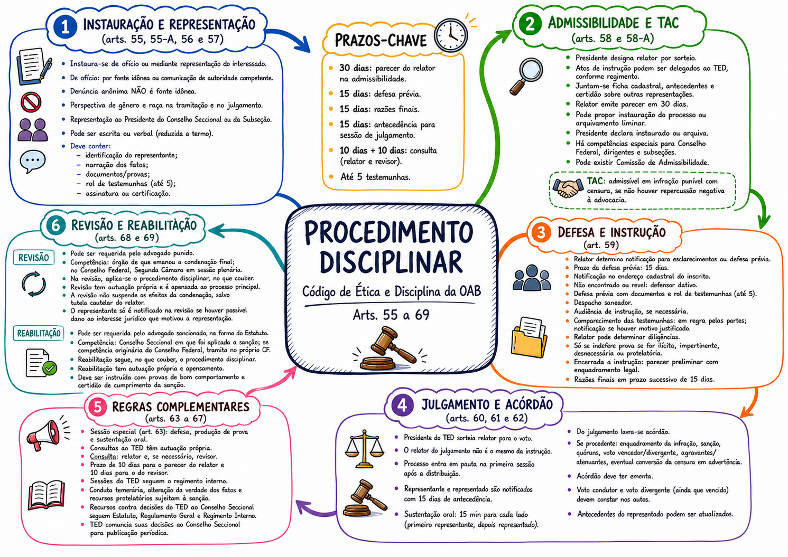

Código de Ética e Disciplina da OAB
Procedimento disciplinar
Mapa guiado dos arts. 55 a 69: instauração, representação, admissibilidade, termo de ajustamento de conduta, defesa, instrução, julgamento, acórdão, regras complementares, revisão e reabilitação.
6
etapas de fluxo
17
artigos e artigos inseridos
9
áudios de estudo
Fluxo do procedimento
Arts. 55 a 69Mapa mental
Organização visual original
Artigo por artigo
Leitura objetiva do recorte normativoTreino rápido
5 pontos de provaSelecione uma alternativa para conferir a justificativa normativa.